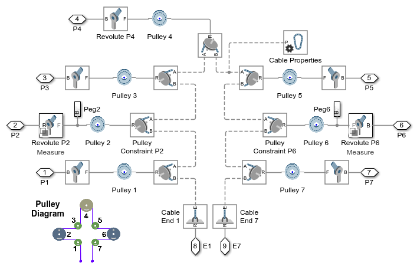
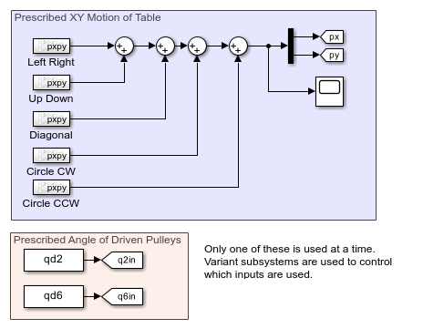

Cable-Driven XY Table with Cross Base
This examples models an XY positioning table that uses a cable-driven mechanism. A single cable wraps around 7 different pulleys and converts the rotational angle of the two input pulleys to the x-y position of the table.
Inverse kinematics can be used to map table position to pulley angle. The model allows you to specify the motion of the table in x-y coordinates and determine the required pulley rotation to produce that movement. Inverse dynamics can be used to calculate the torque required to produce that motion.
Contents
Model
Platform Subsystem
This subsystem models the platform that has two degrees of freedom. The slider and the table are constrained by two prismatic joints which permit movement along two perpendicular axes. The mounting points for all seven pulleys are defined in this subsystem.
Pulleys Subsystem
This subsystem models the seven pulleys which are connected by a single cable. The pulley constraints and the cable connections ensure that the rotation of the individual pulleys follows the kinematic behavior as specified in the diagram. The cable ends attach to points on the upper part of the platform.
Motion Subsystem
This subsystem shows the inputs that can be used to prescribe the motion of the table. The upper set of inputs prescribes the motion of the table in x-y coordinates, and an inverse kinematic simulation can determine the required rotations of pulleys 2 and 6 to achieve that movement. The lower set of inputs prescribe the angles of pulleys 2 and 6. This data was recorded from the inverse kinematic simulation.
Simulation Results from Simscape Logging
This plot shows the XY position of the table.
The plots below show the required motion and torques for pulley 2 and pulley 6 to produce the desired motion of the table.